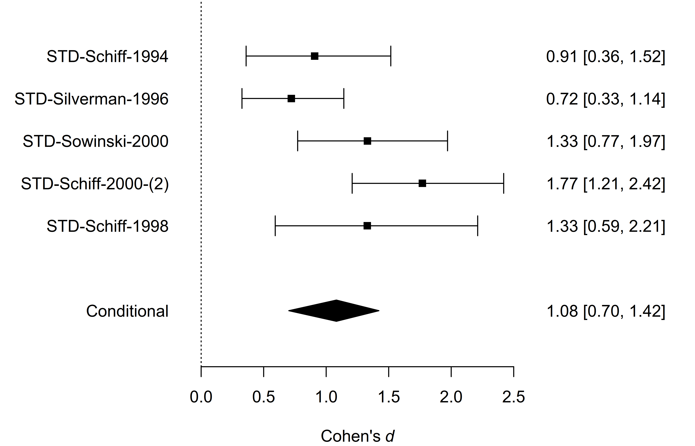
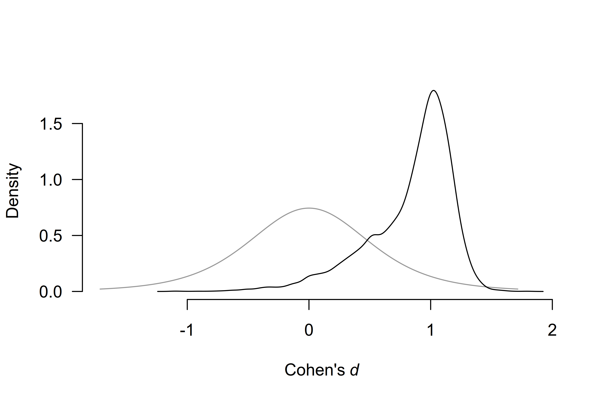

Informed Bayesian Model-Averaged Meta-Analysis in Medicine
František Bartoš
2025-07-19
Source:vignettes/MedicineBMA.Rmd
MedicineBMA.RmdBayesian model-averaged meta-analysis allows researchers to seamlessly incorporate available prior information into the analysis (Bartoš et al., 2021; Gronau et al., 2017, 2021). This vignette illustrates how to do this with an example from Bartoš et al. (2021), who developed informed prior distributions for meta-analyses of continuous outcomes based on the Cochrane database of systematic reviews. Then, we extend the example by incorporating publication bias adjustment with robust Bayesian meta-analysis (Bartoš et al., 2023; Maier et al., 2023).
Reproducing Informed Bayesian Model-Averaged Meta-Analysis (BMA)
We illustrate how to fit the informed BMA (not adjusting for
publication bias) using the RoBMA R package. For this
purpose, we reproduce the dentine hypersensitivity example from Bartoš et al. (2021), who reanalyzed five
studies with a tactile outcome assessment that were subjected to a
meta-analysis by Poulsen et al.
(2006).
We load the dentine hypersensitivity data included in the package.
library(RoBMA)
data("Poulsen2006", package = "RoBMA")
Poulsen2006
#> d se study
#> 1 0.9073050 0.2720456 STD-Schiff-1994
#> 2 0.7207589 0.1977769 STD-Silverman-1996
#> 3 1.3305829 0.2721648 STD-Sowinski-2000
#> 4 1.7688872 0.2656483 STD-Schiff-2000-(2)
#> 5 1.3286828 0.3582617 STD-Schiff-1998To reproduce the analysis from the example, we need to set informed empirical prior distributions for the effect sizes () and heterogeneity () parameters that Bartoš et al. (2021) obtained from the Cochrane database of systematic reviews. We can either set them manually,
fit_BMA <- RoBMA(d = Poulsen2006$d, se = Poulsen2006$se, study_names = Poulsen2006$study,
priors_effect = prior(distribution = "t", parameters = list(location = 0, scale = 0.51, df = 5)),
priors_heterogeneity = prior(distribution = "invgamma", parameters = list(shape = 1.79, scale = 0.28)),
priors_bias = NULL,
transformation = "cohens_d", seed = 1, parallel = TRUE)with priors_effect and priors_heterogeneity
corresponding to the
and
informed prior distributions for the “oral health” subfield and removing
the publication bias adjustment models by setting
priors_bias = NULL.
Note that the package contains function NoBMA() from
version 3.1 which skips publication bias adjustment directly.
Alternatively, we can utilize the prior_informed
function that prepares informed prior distributions for the individual
medical subfields automatically.
fit_BMA <- RoBMA(d = Poulsen2006$d, se = Poulsen2006$se, study_names = Poulsen2006$study,
priors_effect = prior_informed(name = "oral health", parameter = "effect", type = "smd"),
priors_heterogeneity = prior_informed(name = "oral health", parameter = "heterogeneity", type = "smd"),
priors_bias = NULL,
transformation = "cohens_d", seed = 1, parallel = TRUE)The name argument specifies the medical subfield name
(use print(BayesTools::prior_informed_medicine_names) to
check names of all available subfields). The parameter
argument specifies whether we want prior distribution for the effect
size or heterogeneity. Finally, the type argument specifies
what type of measure we use for the meta-analysis (see
?prior_informed for more details regarding the informed
prior distributions).
We obtain the output with the summary function. Adding
the conditional = TRUE argument allows us to inspect the
conditional estimates, i.e., the effect size estimate assuming that the
models specifying the presence of the effect are true and the
heterogeneity estimates assuming that the models specifying the presence
of heterogeneity are
true.
summary(fit_BMA, conditional = TRUE)
#> Call:
#> RoBMA(d = Poulsen2006$d, se = Poulsen2006$se, study_names = Poulsen2006$study,
#> transformation = "cohens_d", priors_effect = prior_informed(name = "oral health",
#> parameter = "effect", type = "smd"), priors_heterogeneity = prior_informed(name = "oral health",
#> parameter = "heterogeneity", type = "smd"), priors_bias = NULL,
#> parallel = TRUE, seed = 1)
#>
#> Robust Bayesian meta-analysis
#> Components summary:
#> Models Prior prob. Post. prob. Inclusion BF
#> Effect 2/4 0.500 0.995 217.517
#> Heterogeneity 2/4 0.500 0.778 3.511
#>
#> Model-averaged estimates:
#> Mean Median 0.025 0.975
#> mu 1.076 1.088 0.664 1.422
#> tau 0.231 0.208 0.000 0.726
#> The estimates are summarized on the Cohen's d scale (priors were specified on the Cohen's d scale).
#>
#> Conditional estimates:
#> Mean Median 0.025 0.975
#> mu 1.082 1.090 0.701 1.422
#> tau 0.297 0.255 0.075 0.779
#> The estimates are summarized on the Cohen's d scale (priors were specified on the Cohen's d scale).The output from the summary.RoBMA() function has 3
parts. The first one under the ‘Robust Bayesian Meta-Analysis’ heading
provides a basic summary of the fitted models by component types
(presence of the Effect and Heterogeneity). The table summarizes the
prior and posterior probabilities and the inclusion Bayes factors of the
individual components. The results show that the inclusion Bayes factor
for the effect corresponds to the one reported in Bartoš et al. (2021),
and
(up to an MCMC error).
The second part under the ‘Model-averaged estimates’ heading displays the parameter estimates model-averaged across all specified models (i.e., including models specifying the effect size to be zero). We ignore this section and move to the last part.
The third part under the ‘Conditional estimates’ heading displays the conditional effect size estimate corresponding to the one reported in Bartoš et al. (2021), , 95% CI [0.686,1.412], and a heterogeneity estimate (not reported previously).
Visualizing the Results
The RoBMA package provides extensive options for
visualizing the results. Here, we visualize the prior (grey) and
posterior (black) distribution for the mean parameter.
plot(fit_BMA, parameter = "mu", prior = TRUE)By default, the function plots the model-averaged estimates across
all models; the arrows represent the probability of a spike, and the
lines represent the posterior density under models assuming non-zero
effect. The secondary y-axis (right) shows the probability of the spike
(at value 0) decreasing from 0.50, to 0.005 (also obtainable from the
‘Robust Bayesian Meta-Analysis’ field in summary.RoBMA()
function).
To visualize the conditional effect size estimate, we can add the
conditional = TRUE argument,
plot(fit_BMA, parameter = "mu", prior = TRUE, conditional = TRUE)which displays only the model-averaged posterior distribution of the effect size parameter for models assuming the presence of the effect.
We can also visualize the estimates from the individual models used
in the ensemble. We do that with the plot_models()
function, which visualizes the effect size estimates and 95% CI of each
specified model included in the ensemble. Model 1 corresponds to the
fixed effect model assuming the absence of the effect,
,
Model 2 corresponds to the random effect model assuming the absence of
the effect,
,
Model 3 corresponds to the fixed effect model assuming the presence of
the effect,
,
and Model 4 corresponds to the random effect model assuming the presence
of the effect,
).
The size of the square representing the mean estimate reflects the
posterior model probability of the model, which is also displayed in the
right-hand side panel. The bottom part of the figure shows the model
averaged-estimate that is a combination of the individual model
posterior distributions weighted by the posterior model
probabilities.
plot_models(fit_BMA)We see that the posterior model probability of the first two models decreased to essentially zero (when rounding to two decimals), completely omitting their estimates from the figure. Furthermore, the much larger box of Model 4 (the random effect model assuming the presence of the effect) shows that Model 4 received the largest share of the posterior probability, )
The last type of visualization that we show here is the forest plot.
It displays the original studies’ effects and the meta-analytic estimate
within one figure. It can be requested by using the
forest() function. Here, we again set the
conditional = TRUE argument to display the conditional
model-averaged effect size estimate at the bottom.
forest(fit_BMA, conditional = TRUE)
For more options provided by the plotting function, see its
documentation by using ?plot.RoBMA(),
?plot_models(), and ?forest().
Adjusting for Publication Bias with Robust Bayesian Meta-Analysis
Finally, we illustrate how to adjust our informed BMA for publication bias with robust Bayesian meta-analysis Maier et al. (2023). In short, we specify additional models assuming the presence of the publication bias and correcting for it by either specifying a selection model operating on -values (Vevea & Hedges, 1995) or by specifying a publication bias adjustment method correcting for the relationship between effect sizes and standard errors – PET-PEESE (Stanley, 2017; Stanley & Doucouliagos, 2014). See Bartoš et al. (2022) for a tutorial.
To obtain a proper before and after publication bias adjustment comparison, we fit the informed BMA model but using the default effect size transformation (Fisher’s ).
fit_BMAb <- RoBMA(d = Poulsen2006$d, se = Poulsen2006$se, study_names = Poulsen2006$study,
priors_effect = prior_informed(name = "oral health", parameter = "effect", type = "smd"),
priors_heterogeneity = prior_informed(name = "oral health", parameter = "heterogeneity", type = "smd"),
priors_bias = NULL,
seed = 1, parallel = TRUE)
summary(fit_BMAb, conditional = TRUE)
#> Call:
#> RoBMA(d = Poulsen2006$d, se = Poulsen2006$se, study_names = Poulsen2006$study,
#> priors_effect = prior_informed(name = "oral health", parameter = "effect",
#> type = "smd"), priors_heterogeneity = prior_informed(name = "oral health",
#> parameter = "heterogeneity", type = "smd"), priors_bias = NULL,
#> parallel = TRUE, seed = 1)
#>
#> Robust Bayesian meta-analysis
#> Components summary:
#> Models Prior prob. Post. prob. Inclusion BF
#> Effect 2/4 0.500 0.997 347.932
#> Heterogeneity 2/4 0.500 0.723 2.608
#>
#> Model-averaged estimates:
#> Mean Median 0.025 0.975
#> mu 1.045 1.052 0.705 1.344
#> tau 0.186 0.163 0.000 0.623
#> The estimates are summarized on the Cohen's d scale (priors were specified on the Cohen's d scale).
#>
#> Conditional estimates:
#> Mean Median 0.025 0.975
#> mu 1.048 1.053 0.720 1.344
#> tau 0.256 0.220 0.064 0.681
#> The estimates are summarized on the Cohen's d scale (priors were specified on the Cohen's d scale).We obtain noticeably stronger evidence for the presence of the effect. This is a result of placing more weights on the fixed-effect models, especially the fixed-effect model assuming the presence of the effect . In our case, the increase in the posterior model probability of occurred because this model predicted the data slightly better after removing the correlation between effect sizes and standard errors (a consequence of using Fisher’s transformation). Nevertheless, the conditional effect size estimate stayed almost the same.
Now, we fit the publication bias-adjusted model by simply removing
the priors_bias = NULL argument, which allows us to obtain
the default 36 models ensemble called RoBMA-PSMA (Bartoš et al., 2023).
fit_RoBMA <- RoBMA(d = Poulsen2006$d, se = Poulsen2006$se, study_names = Poulsen2006$study,
priors_effect = prior_informed(name = "oral health", parameter = "effect", type = "smd"),
priors_heterogeneity = prior_informed(name = "oral health", parameter = "heterogeneity", type = "smd"),
seed = 1, parallel = TRUE)
summary(fit_RoBMA, conditional = TRUE)
#> Call:
#> RoBMA(d = Poulsen2006$d, se = Poulsen2006$se, study_names = Poulsen2006$study,
#> priors_effect = prior_informed(name = "oral health", parameter = "effect",
#> type = "smd"), priors_heterogeneity = prior_informed(name = "oral health",
#> parameter = "heterogeneity", type = "smd"), parallel = TRUE,
#> seed = 1)
#>
#> Robust Bayesian meta-analysis
#> Components summary:
#> Models Prior prob. Post. prob. Inclusion BF
#> Effect 18/36 0.500 0.858 6.022
#> Heterogeneity 18/36 0.500 0.714 2.502
#> Bias 32/36 0.500 0.697 2.304
#>
#> Model-averaged estimates:
#> Mean Median 0.025 0.975
#> mu 0.722 0.880 0.000 1.283
#> tau 0.202 0.161 0.000 0.799
#> omega[0,0.025] 1.000 1.000 1.000 1.000
#> omega[0.025,0.05] 0.943 1.000 0.329 1.000
#> omega[0.05,0.5] 0.874 1.000 0.071 1.000
#> omega[0.5,0.95] 0.855 1.000 0.042 1.000
#> omega[0.95,0.975] 0.866 1.000 0.050 1.000
#> omega[0.975,1] 0.897 1.000 0.057 1.000
#> PET 0.931 0.000 0.000 4.927
#> PEESE 1.131 0.000 0.000 12.261
#> The estimates are summarized on the Cohen's d scale (priors were specified on the Cohen's d scale).
#> (Estimated publication weights omega correspond to one-sided p-values.)
#>
#> Conditional estimates:
#> Mean Median 0.025 0.975
#> mu 0.838 0.938 -0.035 1.297
#> tau 0.285 0.227 0.064 0.906
#> omega[0,0.025] 1.000 1.000 1.000 1.000
#> omega[0.025,0.05] 0.736 0.829 0.092 1.000
#> omega[0.05,0.5] 0.411 0.373 0.014 0.951
#> omega[0.5,0.95] 0.320 0.249 0.008 0.919
#> omega[0.95,0.975] 0.376 0.311 0.009 0.958
#> omega[0.975,1] 0.518 0.425 0.010 1.000
#> PET 2.909 3.136 0.171 5.614
#> PEESE 7.048 6.034 0.375 18.162
#> The estimates are summarized on the Cohen's d scale (priors were specified on the Cohen's d scale).
#> (Estimated publication weights omega correspond to one-sided p-values.)We notice the additional values in the ‘Components summary’ table in the ‘Bias’ row. The model is now extended with 32 publication bias adjustment models that account for 50% of the prior model probability. When comparing the RoBMA to the second BMA fit, we notice a large decrease in the inclusion Bayes factor for the presence of the effect vs. , which still, however, presents moderate evidence for the presence of the effect. We can further quantify the evidence in favor of the publication bias with the inclusion Bayes factor for publication bias , which can be interpreted as weak evidence in favor of publication bias.
We can also compare the publication bias unadjusted and publication bias-adjusted conditional effect size estimates. Including models assuming publication bias into our model-averaged estimate (assuming the presence of the effect) slightly decreases the estimated effect to , 95% CI [-0.035, 1.297] with a much wider confidence interval, as visualized in the prior and posterior conditional effect size estimate plot.
plot(fit_RoBMA, parameter = "mu", prior = TRUE, conditional = TRUE)
Footnotes
The additional setting transformation = "cohens_d" allows
us to get more comparable results with the metaBMA R
package since RoBMA otherwise internally transforms the effect sizes to
Fisher’s
for the fitting purposes. The seed = 1 and
parallel = TRUE options grant us exact reproducibility of
the results and parallelization of the fitting process.
The model-averaged estimates that RoBMA returns by default
model-averaged across all specified models – a different behavior from
the metaBMA package that by default returns what we call
“conditional” estimates in RoBMA.